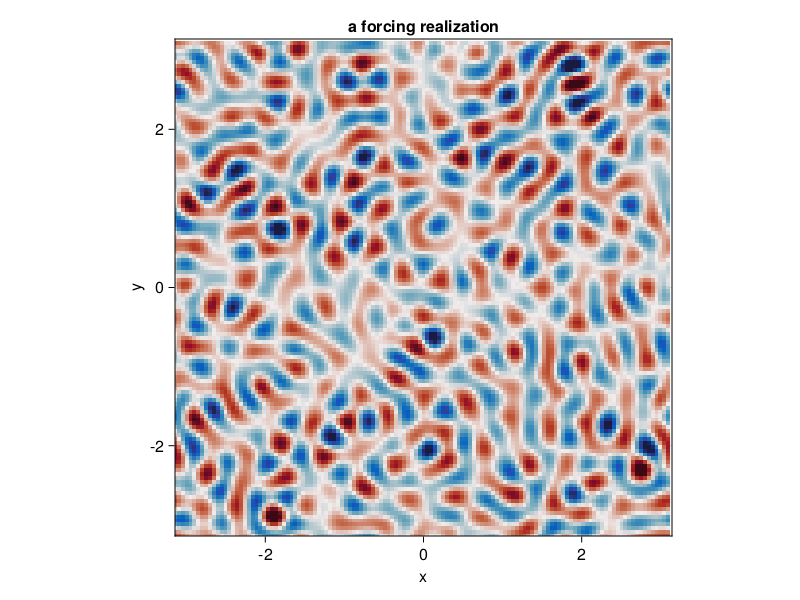

Quasi-Linear forced-dissipative barotropic QG beta-plane turbulence
A simulation of forced-dissipative barotropic quasi-geostrophic turbulence on a beta plane under the quasi-linear approximation. The dynamics include linear drag and stochastic excitation.
Install dependencies
First let's make sure we have all required packages installed.
using Pkg
pkg"add GeophysicalFlows, CUDA, CairoMakie"Let's begin
Let's load GeophysicalFlows.jl and some other packages we need.
using GeophysicalFlows, CUDA, Random, Printf, CairoMakie
using Statistics: mean
parsevalsum = FourierFlows.parsevalsum
record = CairoMakie.record # disambiguate between CairoMakie.record and CUDA.recordChoosing a device: CPU or GPU
dev = CPU() # Device (CPU/GPU)Numerical parameters and time-stepping parameters
n = 128 # 2D resolution = n^2
stepper = "FilteredRK4" # timestepper
dt = 0.05 # timestep
nsteps = 8000 # total number of time-steps
nsubs = 10 # number of time-steps for intermediate logging/plotting (nsteps must be multiple of nsubs)Physical parameters
L = 2π # domain size
β = 10.0 # planetary PV gradient
μ = 0.01 # bottom dragForcing
We force the vorticity equation with stochastic excitation that is delta-correlated in time and while spatially homogeneously and isotropically correlated. The forcing has a spectrum with power in a ring in wavenumber space of radius $k_f$ (forcing_wavenumber) and width $δ_f$ (forcing_bandwidth), and it injects energy per unit area and per unit time equal to $\varepsilon$. That is, the forcing covariance spectrum is proportional to $\exp{[-(|\bm{k}| - k_f)^2 / (2 δ_f^2)]}$.
forcing_wavenumber = 14.0 * 2π/L # the forcing wavenumber, `k_f`, for a spectrum that is a ring in wavenumber space
forcing_bandwidth = 1.5 * 2π/L # the width of the forcing spectrum, `δ_f`
ε = 0.001 # energy input rate by the forcing
grid = TwoDGrid(dev; nx=n, Lx=L)
K = @. sqrt(grid.Krsq) # a 2D array with the total wavenumber
forcing_spectrum = @. exp(-(K - forcing_wavenumber)^2 / (2 * forcing_bandwidth^2))
@CUDA.allowscalar forcing_spectrum[grid.Krsq .== 0] .= 0 # ensure forcing has zero domain-average
ε0 = parsevalsum(forcing_spectrum .* grid.invKrsq / 2, grid) / (grid.Lx * grid.Ly)
@. forcing_spectrum *= ε/ε0 # normalize forcing to inject energy at rate εWe reset of the random number generator for reproducibility
if dev==CPU(); Random.seed!(1234); else; CUDA.seed!(1234); endNext we construct function calcF! that computes a forcing realization every timestep. First we make sure that if dev=GPU(), then CUDA.rand() function is called for random numbers uniformly distributed between 0 and 1.
random_uniform = dev==CPU() ? rand : CUDA.rand
function calcF!(Fh, sol, t, clock, vars, params, grid)
T = eltype(grid)
@. Fh = sqrt(forcing_spectrum) * cis(2π * random_uniform(T)) / sqrt(clock.dt)
return nothing
endProblem setup
We initialize a Problem by providing a set of keyword arguments. We use stepper = "FilteredRK4". Filtered timesteppers apply a wavenumber-filter at every time-step that removes enstrophy at high wavenumbers and, thereby, stabilize the problem, despite that we use the default viscosity coefficient ν=0. Thus, we choose not to do any dealiasing by providing aliased_fraction=0.
prob = BarotropicQGQL.Problem(dev; nx=n, Lx=L, β, μ, dt, stepper,
calcF=calcF!, stochastic=true, aliased_fraction=0)and define some shortcuts.
sol, clock, vars, params, grid = prob.sol, prob.clock, prob.vars, prob.params, prob.grid
x, y = grid.x, grid.y
Lx, Ly = grid.Lx, grid.LyFirst let's see how a forcing realization looks like. Note that when plotting, we decorate the variable to be plotted with Array() to make sure it is brought back on the CPU when vars live on the GPU.
calcF!(vars.Fh, sol, 0.0, clock, vars, params, grid)
fig = Figure()
ax = Axis(fig[1, 1],
xlabel = "x",
ylabel = "y",
aspect = 1,
title = "a forcing realization",
limits = ((-Lx/2, Lx/2), (-Ly/2, Ly/2)))
heatmap!(ax, x, y, Array(irfft(vars.Fh, grid.nx));
colormap = :balance, colorrange = (-8, 8))
fig
Setting initial conditions
Our initial condition is simply fluid at rest.
BarotropicQGQL.set_zeta!(prob, device_array(dev)(zeros(grid.nx, grid.ny)))Diagnostics
Create Diagnostics – energy and enstrophy are functions imported at the top.
E = Diagnostic(BarotropicQGQL.energy, prob; nsteps)
Z = Diagnostic(BarotropicQGQL.enstrophy, prob; nsteps)We can also define our custom diagnostics via functions.
zetaMean(prob) = prob.sol[1, :]
zMean = Diagnostic(zetaMean, prob; nsteps, freq=10) # the zonal-mean vorticityWe combile all diags in a list.
diags = [E, Z, zMean] # A list of Diagnostics types passed to "stepforward!" will be updated every timestep.Output
We choose folder for outputing .jld2 files and snapshots (.png files).
filepath = "."
plotpath = "./plots_forcedbetaQLturb"
plotname = "snapshots"
filename = joinpath(filepath, "forcedbetaQLturb.jld2")Do some basic file management,
if isfile(filename); rm(filename); end
if !isdir(plotpath); mkdir(plotpath); endand then create Output.
get_sol(prob) = prob.sol # extracts the Fourier-transformed solution
function get_u(prob)
grid, vars = prob.grid, prob.vars
@. vars.uh = im * grid.l * grid.invKrsq * sol
ldiv!(vars.u, grid.rfftplan, deepcopy(vars.uh))
return vars.u
end
out = Output(prob, filename, (:sol, get_sol), (:u, get_u))Output
├──── prob: FourierFlows.Problem{DataType, Matrix{ComplexF64}, Float64, Matrix{ComplexF64}}
├──── path: ./forcedbetaQLturb.jld2
└── fields: Dict{Symbol, Function}(:sol => Main.var"##313".get_sol, :u => Main.var"##313".get_u)Visualizing the simulation
We define a function that plots the vorticity and streamfunction fields, the corresponding zonal-mean vorticity and zonal-mean zonal velocity and timeseries of energy and enstrophy.
title_ζ = Observable(@sprintf("vorticity, μt = %.2f", μ * clock.t))
title_ψ = "streamfunction ψ"
fig = Figure(resolution=(1000, 600))
axis_kwargs = (xlabel = "x",
ylabel = "y",
aspect = 1,
limits = ((-Lx/2, Lx/2), (-Ly/2, Ly/2)))
axζ = Axis(fig[1, 1]; title = title_ζ, axis_kwargs...)
axψ = Axis(fig[2, 1]; title = title_ψ, axis_kwargs...)
axζ̄ = Axis(fig[1, 2],
xlabel = "zonal mean ζ",
ylabel = "y",
aspect = 1,
limits = ((-3, 3), (-Ly/2, Ly/2)))
axū = Axis(fig[2, 2],
xlabel = "zonal mean u",
ylabel = "y",
aspect = 1,
limits = ((-0.5, 0.5), (-Ly/2, Ly/2)))
axE = Axis(fig[1, 3],
xlabel = "μ t",
ylabel = "energy",
aspect = 1,
limits = ((-0.1, 4.1), (0, 0.05)))
axZ = Axis(fig[2, 3],
xlabel = "μ t",
ylabel = "enstrophy",
aspect = 1,
limits = ((-0.1, 4.1), (0, 5)))
ζ̄, ζ′= prob.vars.Zeta, prob.vars.zeta
ζ = Observable(Array(@. ζ̄ + ζ′))
ψ̄, ψ′= prob.vars.Psi, prob.vars.psi
ψ = Observable(Array(@. ψ̄ + ψ′))
ζ̄ₘ = Observable(Array(vec(mean(ζ̄, dims=1))))
ūₘ = Observable(Array(vec(mean(prob.vars.U, dims=1))))
μt = Observable(μ * E.t[1:1])
energy = Observable(E.data[1:1])
enstrophy = Observable(Z.data[1:1])
heatmap!(axζ, x, y, ζ;
colormap = :balance, colorrange = (-8, 8))
heatmap!(axψ, x, y, ψ;
colormap = :viridis, colorrange = (-0.22, 0.22))
lines!(axζ̄, ζ̄ₘ, y; linewidth = 3)
lines!(axζ̄, 0y, y; linewidth = 1, linestyle=:dash)
lines!(axū, ūₘ, y; linewidth = 3)
lines!(axū, 0y, y; linewidth = 1, linestyle=:dash)
lines!(axE, μt, energy; linewidth = 3)
lines!(axZ, μt, enstrophy; linewidth = 3, color = :red)
Time-stepping the Problem forward
We step the Problem forward in time.
startwalltime = time()
frames = 0:round(Int, nsteps / nsubs)
record(fig, "barotropicqgql_betaforced.mp4", frames, framerate = 18) do j
if j % (1000 / nsubs) == 0
cfl = clock.dt * maximum([maximum(vars.u .+ vars.U) / grid.dx, maximum(vars.v) / grid.dy])
log = @sprintf("step: %04d, t: %d, cfl: %.2f, E: %.4f, Q: %.4f, walltime: %.2f min",
clock.step, clock.t, cfl, E.data[E.i], Z.data[Z.i],
(time()-startwalltime)/60)
println(log)
end
ζ[] = @. ζ̄ + ζ′
ψ[] = @. ψ̄ + ψ′
ζ̄ₘ[] = vec(mean(ζ̄, dims=1))
ūₘ[] = vec(mean(prob.vars.U, dims=1))
μt.val = μ * E.t[1:E.i]
energy[] = E.data[1:E.i]
enstrophy[] = Z.data[1:E.i]
title_ζ[] = @sprintf("vorticity, μt = %.2f", μ * clock.t)
stepforward!(prob, diags, nsubs)
BarotropicQGQL.updatevars!(prob)
endstep: 0000, t: 0, cfl: 0.00, E: 0.0000, Q: 0.0000, walltime: 0.00 min
step: 1000, t: 50, cfl: 0.64, E: 0.0286, Q: 3.9616, walltime: 0.10 min
step: 2000, t: 100, cfl: 0.81, E: 0.0384, Q: 4.1193, walltime: 0.18 min
step: 3000, t: 150, cfl: 0.80, E: 0.0441, Q: 4.4990, walltime: 0.27 min
step: 4000, t: 200, cfl: 0.80, E: 0.0450, Q: 3.6810, walltime: 0.37 min
step: 5000, t: 250, cfl: 0.87, E: 0.0472, Q: 4.0671, walltime: 0.46 min
step: 6000, t: 300, cfl: 0.92, E: 0.0484, Q: 4.1866, walltime: 0.56 min
step: 7000, t: 350, cfl: 0.89, E: 0.0482, Q: 3.8817, walltime: 0.66 min
step: 8000, t: 400, cfl: 0.92, E: 0.0482, Q: 3.7857, walltime: 0.77 min
Save
Finally, we can save, e.g., the last snapshot via
savename = @sprintf("%s_%09d.png", joinpath(plotpath, plotname), clock.step)
savefig(savename)This page was generated using Literate.jl.